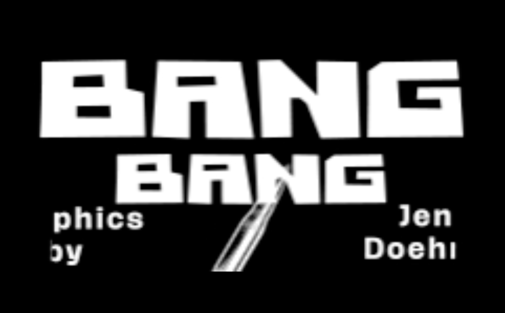
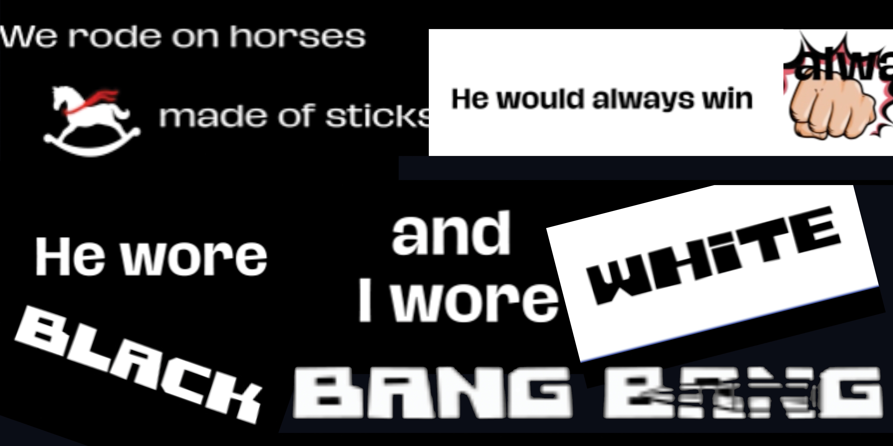
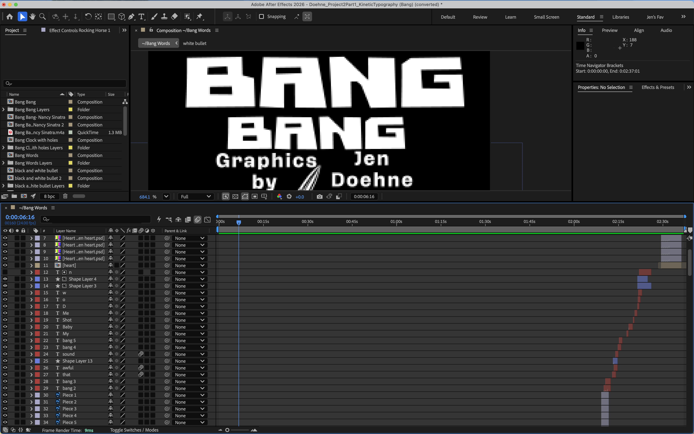

SOFTWARE
Adobe After Effects
Adobe Illustrator
Adobe Photoshop
MY ROLE
Motion Designer
Illustrator
Video Editor
DELIVERABLES
Concept Development
Storyboarding
Illustration & Asset Creation
Motion Design
Video Editing
TOOLS & CREDITS
Music: “Bang Bang (My Baby Shot Me Down)”
Performed by Nancy Sinatra
Originally written and performed by Cher
Envato Elements: licensed subscription assets and mockups
01 / THE CONCEPT
PROJECT OVERVIEW
Bang Bang reimagines Nancy Sinatra’s iconic recording as a vintage western-inspired motion graphic music video, combining bold typography, illustrated characters, and cinematic transitions.
The aim was to make the music drive the storytelling—not simply illustrate the lyrics. Timing, movement, and contrast build tension and lead into the song’s dramatic moments.
- Music-led visual storytelling
- Retro western and 1960s-inspired art direction
- Illustration, animation, compositing, and editing


02 / THE ART DIRECTION
CREATIVE DIRECTION
The visual language combines retro western film imagery with a playful graphic interpretation of rivalry, confidence, and nostalgia.
- Black-and-white imagery with selective color
- Bold typography and stylized character silhouettes
- Illustrated environments and graphic scene transitions
Storyboarding established the composition and pacing. Original illustrations and graphic assets were composited and animated in Adobe After Effects, with movement refined to follow the music.
03 / FROM LYRICS TO MOTION
PROCESS
Inspired by the visual energy of Kill Bill and music-driven motion graphics, I used lyrics as the starting point for visual ideas rather than treating them as captions.
LYRIC → VISUAL
“The church bells rang”
The words form a church, with “rang” transformed into
the bell.
BEAT → MOVEMENT
“Bang bang”
A clock face with bullet holes creates a graphic moment
timed to the beat.
Storyboarding, asset creation, animation, and editing brought the sequence together. Restrained color accents emphasize key moments while preserving the monochromatic style.

04 / BEHIND THE SCENES
BEHIND THE SCENES
A look inside the animation workflow.

Let's make some noise.
CONTACT ME